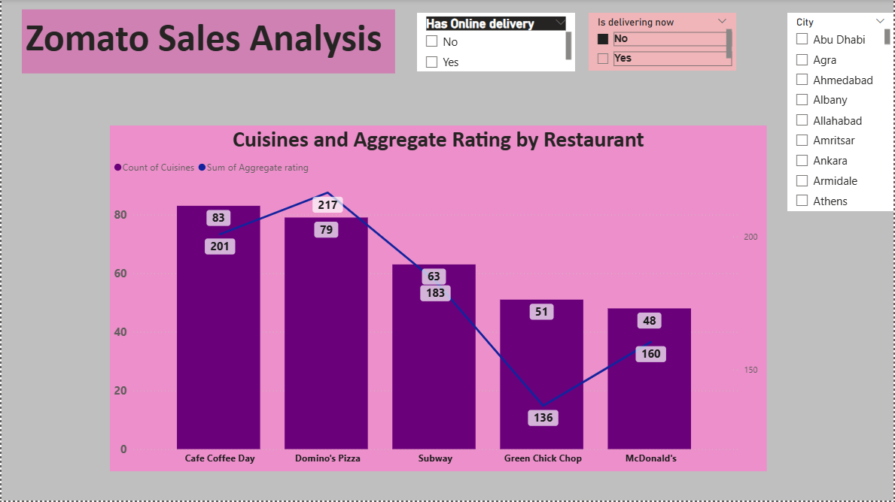
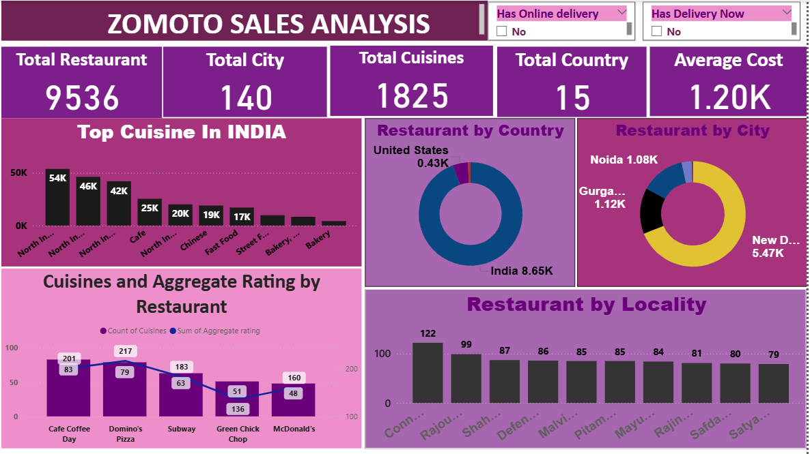

Concept
Restaurant analytics built for operational clarity.
The project transforms a public Zomato dataset into a Power BI reporting system that helps stakeholders understand restaurant patterns, cuisine distribution, and rating behavior.
A Power BI analysis project focused on restaurant performance, cuisine trends, ratings, and regional patterns inside Zomato data.

The project transforms a public Zomato dataset into a Power BI reporting system that helps stakeholders understand restaurant patterns, cuisine distribution, and rating behavior.
The workflow moved from basic country-level counts toward more analytical segmentation by restaurant offerings, customer ratings, and overall service mix.


Explore the project files and supporting material behind the analysis.
Open GitHubReturn to the main portfolio and continue browsing the project collection.
Back to Portfolio